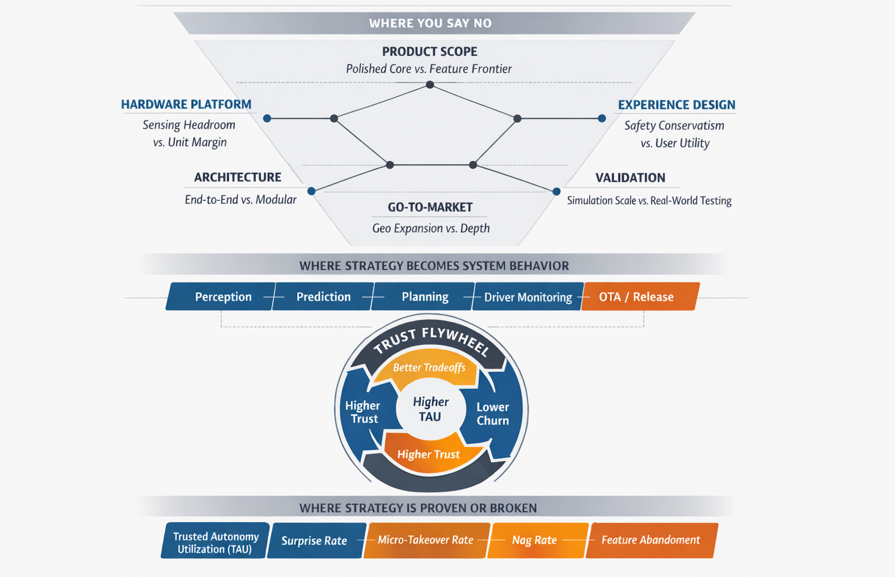

The Strategy of "No": Scaling ADAS Trust through Tradeoffs
How deliberate constraints - what you will not build, where you will not launch, what you will sacrifice - create sustainable revenue in safety-critical products.
Researched & written by Aditya Kothari · AI-assisted editing for better readibility
Building Smart, Not Big built an MVP prioritization framework for urban hands-free driving. Beyond Miles Per Disengagement proposed metrics that predict whether users actually trust and engage the system. This article addresses the C-suite question those two were building toward: how do you make deliberate strategic decisions - and sustainable revenue - with ADAS?
If a competitor launched urban hands-free driving in 22 cities before you shipped it in 5, who won? The answer is not the team with 22 cities. It is the team whose drivers still used the system six months later. That answer is obvious in hindsight. It is not how most programs operate.
ADAS programs fail strategically, not technically. Teams ship features that work in ideal conditions and call it a launch. They over-spec the experience and under-spec the trust. And because feedback loops are slow (fleet data takes weeks, take-rate trends take months, regulatory consequences take years), they do not discover the mistake until the damage is done.
Strategy in ADAS is a series of deliberate constraints: what you will not build, where you will not launch, what you will sacrifice today to protect the one thing that cannot be recovered once lost: user trust.
Disclaimer: These are my personal perspectives, grounded in general industry methodologies and my experience across ADAS product lifecycles. Your mileage may vary based on your organization's capabilities, market position, and risk tolerance.
Core Thesis
"No" is not about limiting innovation. It is about sequencing it. Every premature yes introduces variability. In a safety-critical product, variability does not just create a worse experience. It breaches trust. And trust, once broken, does not recover linearly.
Part I: Core Tradeoffs
These three decisions define the product's competitive positioning. They happen early, are often made piecemeal, and are deeply interconnected: getting one wrong undermines the others.
01 · Product Scope
"The Polished Core" vs. "The Feature Frontier"
The Conflict
Ship a complete version of 5 features, or a partial version of 20? The business always has a case for the next capability. The competition just announced something new. The pressure to expand scope is constant.
The Choice
Prioritize Trusted Autonomy Utilization (TAU) over feature count. Win completely within a narrow operational domain before expanding it.
The Reasoning
A surprising system event is not a minor inconvenience. It is a trust event. The driver disengages, remembers, and tells someone. Surprise Rate cascades into Feature Abandonment Rate, which cascades into subscription take-rate, which undermines the LTV model that justified the program. A user who activates hands-free driving on 80% of eligible miles generates fundamentally different revenue economics than one who activates it 15% of the time across twice as many theoretical scenarios. Depth of mastery compounds into habit. Habit is what economics require.
Watch For
Surprise Rate trending upward in a new scenario type
Feature Abandonment Rate within 30 days of first use
TAU split between declared ODD and edge-of-ODD scenarios
Counter-Argument
Breadth-first is legitimate when the goal is platform lock-in, when capturing distribution before a competitor matters more than trust-building. The ADAS-specific rebuttal: platform lock-in math collapses when a single high-visibility safety incident in a broadly-deployed shallow product destroys brand trust non-linearly. The liability asymmetry changes the economics of speed.
02 · Hardware Platform
"Sensing Headroom" vs. "Unit Margin"
The Conflict
Spec cheaper sensors to hit today's MSRP target, or over-spec hardware to allow software-defined growth over the vehicle's 10-year fleet life?
The Choice
Invest in sensing headroom on the critical path of the software roadmap. Treat hardware headroom as churn prevention, not cost indulgence.
The Reasoning
Hardware decisions lock in at production. A sensor suite in a 2025 model year vehicle will be in customer driveways through 2035. If Micro-takeover Rate is elevated due to sensor noise or limited range, you cannot code your way out of it after launch. Every physical sensing limitation becomes a ceiling on what OTA software updates can deliver. The investment in sensing headroom is only defensible when it is linked to specific committed features on the software roadmap, not aspirational capabilities, but near-term improvements that are blocked by sensor limitations if the hardware is not there. Without that link, the argument loses.
Watch For
Micro-takeover Rate trending against sensor headroom budget
OTA feature blockers attributed to sensing limitations
BOM cost delta versus 5-year subscription revenue impact
Organizational Tension
This decision is typically made by finance and hardware teams working against an MSRP target, without visibility into software roadmap dependencies. The PM's job is to quantify those dependencies: translate 'we can't improve lane centering without better forward radar range' into a churn and revenue number that the margin decision is actually trading against.
03 · User Experience
"Safety Conservatism" vs. "User Utility"
The Conflict
A system too conservative generates a high Nag Rate, and users turn it off. A system reaching past its reliable envelope produces safety disengagements. Both outcomes destroy trust, through opposite failure modes.
The Choice
Design for predictable performance within a declared ODD rather than maximum autonomy across all conditions. Expand the ODD only after earning trust inside it.
The Reasoning
There are two types of system intervention. Safety-critical interventions must happen, regardless of user friction. Comfort interventions - those reflecting edge-case conservatism, sensor uncertainty buffers, or regulatory overcaution - are tunable. When maximum conservatism is applied uniformly, Nag Rate climbs until users develop a habit of overriding or disabling the feature. A system that is never turned off generates more value than a system with a higher theoretical capability ceiling that gets switched off after the first week. The failure mode that does not appear in safety reports is the system that is quietly abandoned.
Watch For
Nag Rate by scenario type and ODD boundary
Voluntary disengagement rate (driver-initiated, not system-triggered)
Re-engagement rate after disengagement events
Segment Matters
The right calibration is not universal. Fleet operators may prefer conservative intervention profiles as evidence of diligence. Consumer hands-free driving targets a user who wants the system to feel effortless, not cautious. A single calibration for all segments is not strategy. It is a default.
Part II: System-Level Tradeoffs
The core tradeoffs define what you build and where you compete. The following six determine whether the organization can execute against that positioning. These are often delegated to engineering leads as technical decisions. Each one has direct implications for trust, speed-to-market, and how the product evolves.
04 · Architecture Strategy
"End-to-End ML" vs. "Modular Stack"
The Conflict
A unified end-to-end model promises performance advantages. A modular perception → prediction → planning stack is slower to improve but more transparent.
The Choice
Optimize for debuggability and regulatory explainability over theoretical performance ceiling.
The Reasoning
For L2+/L3 systems in public deployment, the limiting factor is not performance. It is the ability to answer 'why did it do that?' when a regulator, safety team, or customer asks. This requirement does not mandate a modular stack; it mandates deliberate investment in explainability, regardless of architecture. End-to-end ML systems can satisfy this requirement through two mechanisms: (1) XAI instrumentation; and (2) deterministic output bounds. The architecture choice therefore reduces to a build cost question: modular stacks get explainability structurally but sacrifice iteration speed; end-to-end systems achieve higher performance potential but require explicit upfront investment in XAI tooling and output bounding infrastructure to reach the same regulatory bar. Where modular retains a genuine edge is incident root-cause isolation: tracing a failure to a specific subsystem boundary (perception vs. prediction vs. planning) remains harder in end-to-end systems even with XAI tooling.
Watch For
Root-cause resolution time per incident
Certification cycle length per software update
Regulatory inquiry response time
05 · Go-to-Market Strategy
"Geographic Expansion" vs. "Depth of Reliability"
The Conflict
Expand to more cities quickly, generating coverage headlines, or dominate a narrow geography before expanding?
The Choice
Maximize TAU per geography. Use TAU consistency as the expansion gate, not mile coverage.
The Reasoning
Shallow coverage produces high disengagement variance. Drivers in well-trained cities experience a system operating in exhaustively tested conditions. Drivers in new geographies encounter edge cases at higher rates: unusual intersection geometry, regional driving norms, unfamiliar road markings. Surprise Rate climbs. Word of mouth goes negative. Winning one geography completely - establishing daily engagement habits, near-zero surprise events - generates more strategic value than partial presence in twenty. It also generates higher-quality fleet data, because engaged drivers in familiar environments produce richer scenario coverage per mile.
Watch For
TAU consistency across a geography over 90 days
Surprise Rate delta between established and new regions
Data collection rate per active mile by region
06 · Development Strategy
"Simulation Scale" vs. "Real-World Fidelity"
The Conflict
Rely on large-scale simulation - cheap, fast, infinitely repeatable - or invest in expensive real-world data collection?
The Choice
Invest in scenario fidelity and novel edge-case discovery, not raw mile volume.
The Reasoning
The bottleneck in ADAS validation is not miles. It is novel scenario discovery rate. A system trained on a billion simulated highway miles remains brittle to the specific combination of unusual lighting, wet road markings, construction zone geometry, and a pedestrian stepping off a median that it encounters in real operation. Simulation reproduces known scenarios at scale; it struggles to generate unknown unknowns. Real-world collection programs should be optimized around discovering scenarios simulation cannot generate: complex multi-agent interactions, rare environmental conditions, behavioral outliers. Volume is the wrong optimization target.
Watch For
Novel scenario discovery rate per 1,000 collection miles
Long-tail failure rate in real-world vs. simulation conditions
ODD edge exposure coverage by scenario category
07 · Release Strategy
"OTA Velocity" vs. "System Stability"
The Conflict
Ship frequent OTA updates to improve quickly, or maintain long validation cycles to protect stability?
The Choice
Optimize for trust-preserving iteration: improve visibly, but never at the cost of a regression the driver experiences.
The Reasoning
Users forgive slow progress. They do not forgive regressions. In an ADAS system, a regression is not a UX hiccup. It is a trust event that erases weeks of consistent good behavior. The correct cadence is determined by the confidence interval on post-update trust metrics, not by a fixed release schedule. Rapid iteration is only sustainable when the regression detection framework is fast enough to catch problems before they reach users, which requires investing in behavioral monitoring infrastructure proportional to OTA velocity.
Watch For
Post-OTA TAU delta within 14 days
Surprise Rate change per software version
Regression detection latency (time from update to signal)
08 · Human-System Contract
"Monitoring Strictness" vs. "User Freedom"
The Conflict
Strict driver monitoring reduces liability but feels punitive. Lax monitoring creates safety and regulatory risk. Neither extreme is viable.
The Choice
Design driver monitoring as a behavior shaping interface, not a compliance enforcement mechanism.
The Reasoning
Drivers who feel surveilled route around monitoring: they find workarounds, disable the system, or avoid engaging it. Overly strict monitoring increases disengagement in ways that don't appear in safety reports. The goal is maintaining a healthy supervisory relationship between driver and system: the driver remains appropriately engaged without feeling penalized for normal human behavior. This requires treating monitoring data as a trust interface signal, not purely a safety compliance output. The two uses require different calibration targets.
Watch For
Override rate and pattern (frequency, scenario type)
Disengagement attributed to monitoring triggers vs. system behavior
Monitoring compliance rate by user segment
09 · Org Strategy
"Vertical Integration" vs. "Supplier Ecosystem"
The Conflict
Build in-house for control, or rely on Tier 1 suppliers for speed? Full vertical integration is slow; heavy supplier dependence commoditizes the product.
The Choice
Own the differentiation layer - data pipelines, ML models, trust metrics, feedback loops - and outsource commodity components.
The Reasoning
The differentiation in ADAS is shifting from sensor hardware and raw compute to the intelligence layer: how quickly a system learns from its fleet, how predictably it behaves across diverse real-world conditions, and how efficiently it closes the loop between user behavior signals and model updates. Outsourcing these layers to suppliers transfers the durable competitive advantage with them. Hardware and compute infrastructure, where differentiation is minimal and commodity economics apply, are the correct outsourcing targets.
Watch For
In-house vs. supplier coverage of data loop components
Model improvement velocity (metric improvement per fleet mile)
Time from fleet signal to deployed model update
The Tradeoffs Framework
The table below is a decision rubric. The Reversibility column is the most important for prioritization: hardware and architecture decisions are irreversible at automotive timescales and deserve disproportionate debate at program inception. Scope and GTM decisions are highly reversible and can be adjusted as metrics reveal market response. Urgency is asymmetric and program planning should reflect that.
Nine Tradeoffs at a GlanceDecision rubric · Reversibility & risk-weighted
Tradeoff
Reversibility
Risk
Short-Term Pull
Trust-First Choice
Key Signal
Product Scope
High - scope can expand
Low
Feature count, coverage headlines
Deep, predictable core (high TAU)
Surprise Rate · Feature Abandonment Rate
Hardware Platform
None - locked at production
Irreversible
Unit margin, lower BOM
Sensing headroom for OTA roadmap
Micro-takeover Rate · sensor ceiling hits
User Experience
Medium - OTA tunable
Medium
Max autonomy across all conditions
Predictable perf. within declared ODD
Nag Rate · voluntary disengagement
Architecture
Very Low - structural
High
Modular stack for structural explainability
End-to-end ML with XAI instrumentation and deterministic output bounds
XAI audit coverage · output bound violation rate · root-cause isolation time per incident
Go-To-Market
High - GTM can adjust
Low
City count, market coverage
TAU depth per geography before expansion
TAU consistency · regional Surprise Rate
Validation
Medium
Medium
Simulated mile volume
Novel scenario discovery rate
Long-tail failure rate · ODD edge exposure
Release Cadence
Medium - rollback possible
Medium
OTA update velocity
Zero regression per update
Post-OTA trust metric delta
Driver Monitoring
Medium - SW configurable
Medium
Strict compliance enforcement
Behavior shaping interface
Override rate · disengagement pattern
Vertical Integration
Low - org structural
High
Supplier speed, commodity cost
Own the differentiation layer
Data loop speed · model improvement rate
Trigger for Strategic Reassessment
No tradeoff should be treated as permanently resolved. Reassess when: TAU falls more than 10 points in a geography · Surprise Rate trends upward after a stable period · a competitor launches in a region you were counting on dominating · a new sensing technology makes hardware headroom assumptions obsolete. Build these as explicit calendar-triggered reviews, not ad hoc reactions.
The Trust Flywheel as a Competitive Moat
No single tradeoff in this article wins an ADAS program. The framework holds together because of a compounding mechanism that connects all nine decisions: the Trust Flywheel.

Figure: The strategic tradeoffs above the line, the system-behavior layer where those decisions take shape, and the trust metrics below that reveal whether the strategy is working. The flywheel sits at the center because trust is what compounds.
Breaking it down into its compounding stages:
Better Tradeoffs: decisions that prioritize predictability over capability breadth.
Predictable System Behavior: the system performs within its declared ODD without surprise events.
Higher TAU: drivers choose to engage the system daily, and trust is established.
Lower Churn: Feature Abandonment Rate drops, and subscription renewal improves.
Consistent Revenue: capital is available for R&D, validation, and model improvement.
Better Data & Models: fleet data quality improves, and the next program cycle starts stronger.
The flywheel is slow to start and hard to stop once moving. The first rotation requires making the right calls before there is fleet data to validate them: on hardware, on architecture, on scope. That is where the strategic judgment lives, and where most programs fail: not in the engineering, but in the willingness to say no when yes would be easier.
The flywheel also explains why being second is survivable in ADAS in a way it is not in consumer software. A competitor with broader coverage but lower TAU is building a leaky flywheel. Disengaged users generate lower-quality data, do not create word-of-mouth, and renew subscriptions at lower rates. A smaller fleet with 80% TAU generates more strategic value, in revenue terms and data quality, than a larger fleet at 25% TAU.
The Bottom Line
The hardest part of building autonomous systems is not solving for intelligence. It is deciding where not to apply it: every yes introduces variability, and in a product where trust is the only irreplaceable asset, variability is always a cost.
The best ADAS products are not the most capable systems. They are the most predictable ones: the systems people choose to activate, every day, because they know what will happen next.